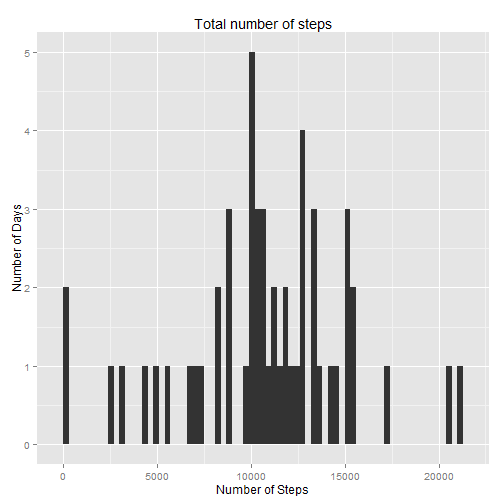

It is now possible to collect a large amount of data about personal movement using activity monitoring devices such as a Fitbit, Nike Fuelband, or Jawbone Up. These type of devices are part of the “quantified self” movement – a group of enthusiasts who take measurements about themselves regularly to improve their health, to find patterns in their behavior, or because they are tech geeks. But these data remain under-utilized both because the raw data are hard to obtain and there is a lack of statistical methods and software for processing and interpreting the data.
This assignment makes use of data from a personal activity monitoring device. This device collects data at 5 minute intervals through out the day. The data consists of two months of data from an anonymous individual collected during the months of October and November, 2012 and include the number of steps taken in 5 minute intervals each day.
The data for this assignment can be downloaded from the course web site. The variables included in this dataset are:
The dataset is stored in a comma-separated-value (CSV) file and there are a total of 17,568 observations in this dataset.
Load some libraries into the session scope and set system locale to ENGLISH:
library(ggplot2)
Sys.setlocale("LC_TIME", "English")
## [1] "English_United States.1252"
The data is loaded into a data.frame object via the read.csv function:
dt <- read.csv('activity.csv')
The date variable comes as a character type. For the sake of correctness it should be converted to the proper date type:
dt$date = as.Date(dt$date, format="%Y-%m-%d")
For this part of the assignment, the missing values in the dataset can be ignored.
Make a histogram of the total number of steps taken each day:
# Filter NA values
dtNonNA <- dt[!is.na(dt$steps), ]
# Summarize steps for each day
dtStepsPerDay <- aggregate(steps ~ date, data= dtNonNA, sum)
# Plot histogram
qplot(steps, data=dtStepsPerDay, binwidth = 300)+
labs(title="Total number of steps", x="Number of Steps", y="Number of Days")

Calculate and report the mean and median total number of steps taken per day.
# Simply calculate the mean
meanSteps <- mean(dtStepsPerDay$steps)
The users made 1.0766 × 104 steps each day in average.
# Simply calculate the median
medianSteps <- median(dtStepsPerDay$steps)
The users made 10765 steps each day in average.
dtActivity <- dtNonNA[, c("steps", "interval")]
dtActivity <- aggregate(steps ~ interval, data= dtActivity, mean)
# Plot histogram
qplot(interval, steps, data=dtActivity, geom= "line")+
labs(title="Average Daily Activity Pattern", x="Interval", y="Steps")
The 5-minute interval with the maximum numbers of steps is at interval 835.
There are 2304 records with missing values in the dataset.
The following strategy will be used to impute the missing values: simply use the median steps for each interval.
impute <- function(int) {
a <- dtActivity$steps[dtActivity$interval == int]
if(length(a) == 0) { return (0) }
else { return (as.integer(a)) }
}
dt$steps[is.na(dt$steps)] <- sapply(dt$interval[is.na(dt$steps)], impute)
The new histogram of the total number of steps taken each day:
# Summarize steps for each day
dtStepsPerDayImputed <- aggregate(steps ~ date, data= dt, sum)
# Plot histogram
qplot(steps, data=dtStepsPerDayImputed, binwidth = 300)+
labs(title="Total number of steps (imputed)", x="Number of Steps", y="Number of Days")

# Simply calculate the mean
meanStepsImputed <- mean(dtStepsPerDayImputed$steps)
The users made 1.075 × 104 steps each day in average after imputing missing values.
# Simply calculate the median
medianStepsImputed <- median(dtStepsPerDayImputed$steps)
The users made 10641 steps each day in average after imputing missing values.
Using the imputed values has an impact:
More visible as a diagram:
# Prepare data
dtStepsPerDay$type <- as.factor("Original")
dtStepsPerDayImputed$type <- as.factor("Imputed")
dtStepHisto <- rbind(dtStepsPerDay, dtStepsPerDayImputed)
# Plot histogram
ggplot(dtStepHisto, aes(steps, fill = type))+
theme(legend.title= element_blank())+
geom_bar(position= "dodge", binwidth= 400)+
labs(title="Comparision of total number of steps", x="Number of Steps", y="Number of Days")

# Mapping from day of week to either weekend or sunday
we <- function(d) if(d %in% c("Sunday","Saturday")) { return( "Weekend") } else {return ("Weekday")}
# Add day variable
dt$wd <- as.factor(weekdays(dt$date))
dt$we <- as.factor(sapply(dt$wd, we))
# Agggregate steps by interval and weekday
dtDay <- dt[, c("interval", "steps", "we")]
dtDay <- aggregate(dtDay$steps, by=list(dtDay$interval, dtDay$we), mean)
colnames(dtDay) <- c("interval", "we", "steps")
# Caluclate means
dtWeekday <- dtDay[dtDay$we == "Weekday", ]
dtWeekend <- dtDay[dtDay$we == "Weekend", ]
dtWeekdayMean <- mean(dtWeekday$steps)
dtWeekendMean <- mean(dtWeekend$steps)
Yes, there are differences. There is much more activity on the weekend: The average activity during weekdays is 35.5526 steps a day, during the weekend it is 42.3121 steps a day:
# Prepare mean values data frame
dtMean <- data.frame(c(dtWeekdayMean, dtWeekendMean), as.factor(c("Weekday", "Weekend")))
colnames(dtMean) <- c("mean", "we")
# Prepare labels data frame
dtLabel <- data.frame(c(150, 150), c(dtWeekdayMean+15, dtWeekendMean+15),
c(sprintf("%d steps", as.integer(dtWeekdayMean)),
sprintf("%d steps", as.integer(dtWeekendMean))),
as.factor(c("Weekday", "Weekend")))
colnames(dtLabel) <- c("x", "y", "lab", "we")
# Plot faceted graph
qplot(interval, steps, data=dtDay, geom= "line", color= we)+
geom_hline(data= dtMean, aes(yintercept= mean), linetype= 2)+
geom_text(data= dtLabel, aes(x, y, label=lab))+
theme(legend.position="none")+
facet_wrap(~ we, nrow=2)+
labs(title="Average Daily Activity Pattern by Day", x="Interval", y="Steps")